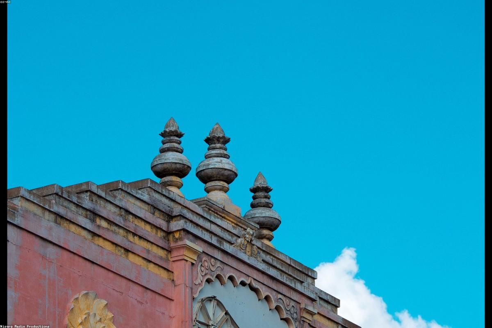

Tamil Nadu
Madurai, often called "Thoonga Nagaram" (the city that never sleeps) and "The Athens of the East," is one of the oldest continuously inhabited cities in the world. Dominating the city's skyline is the phenomenal Meenakshi Amman Temple, a masterpiece of Dravidian architecture with its colorful gopurams and thousands of stone-carved figures. Madurai was once the seat of the powerful Pandyan dynasty and has always been a major center for Tamil literature and art. Today, it remains a soulful mix of ancient spirituality, bustling markets, and some of the best street food in South India.
Madurai is located on the banks of the River Vaigai in the southern part of Tamil Nadu.
The best time to visit is from October to March. The Chithirai Festival in April is a massive cultural spectacle.
By Air: Madurai International Airport is well-connected to major Indian cities and some international hubs.
By Train: Madurai Junction is a major railway station in the South.
By Road: Very well-connected by highways; frequent buses run from Chennai, Bangalore, and Kerala.
- Wear comfortable cotton clothes as the city can be quite hot during the day.
- Be aware of the temple rules; mobile phones and some electronic gadgets may be banned inside the Meenakshi temple.
- Hiring a local guide at the temple and palace will greatly enhance your understanding of the history.
- Try the local "Idiyappam" and the many varieties of spicy curries in local mess-style hotels.